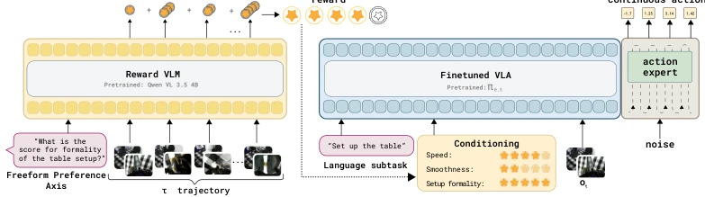
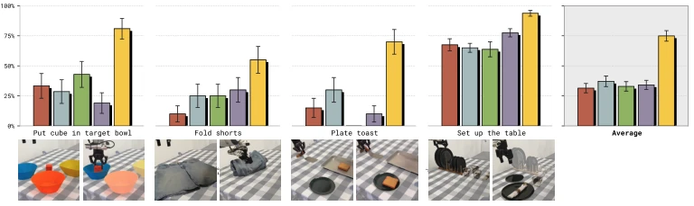
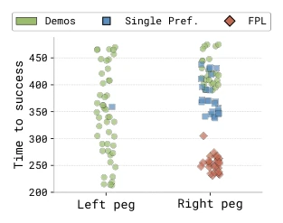
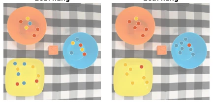
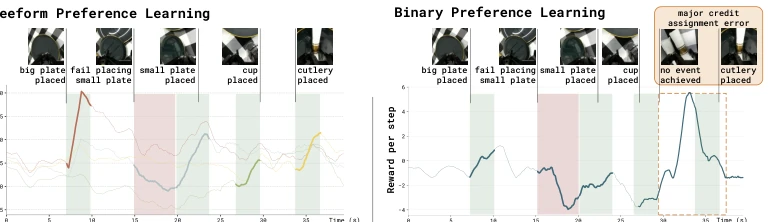
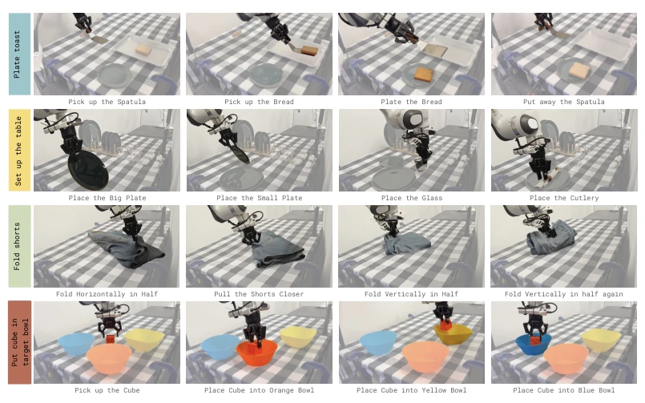
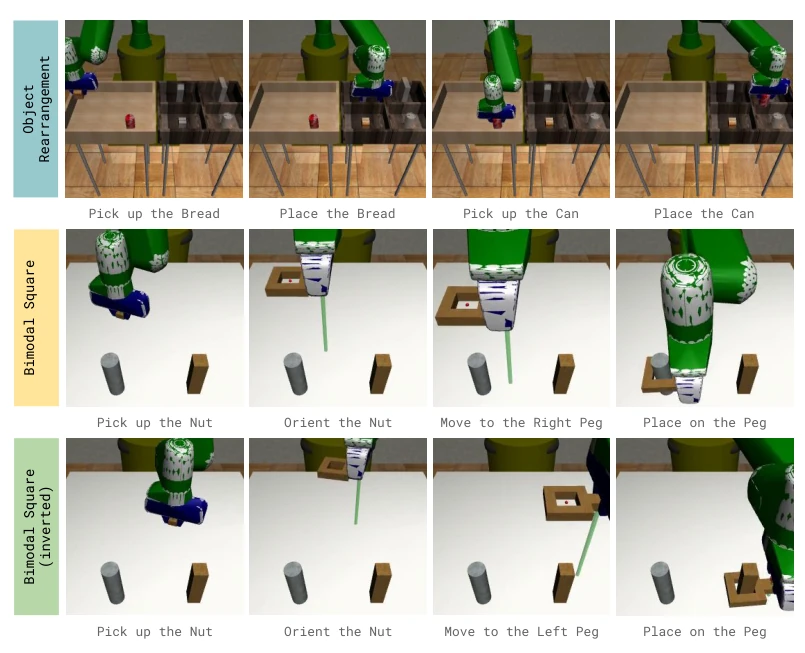
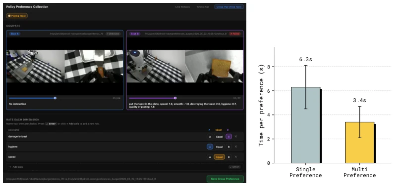
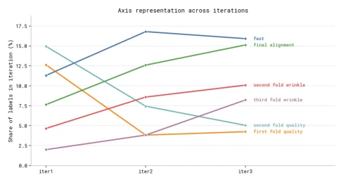
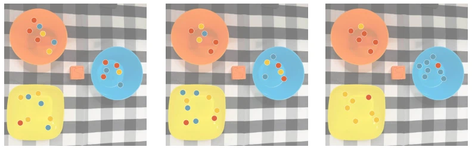

This paper delivers a vivid lesson to the robot reinforcement learning community on "how humans speak". The core logic of FPL is simple: do not force humans to make single-choice questions (which is better?), but let them make multiple-choice questions (which is faster? which is more stable? which is more elegant?). This move is indeed clever, decomposing the vague "overall preference" into quantifiable multi-dimensional signals, allowing robots to finally learn "not only to get the job done, but to do it beautifully". However, this method is not a panacea. It still relies on expensive human annotation, and adjusting targets during testing requires human intervention, with automation levels far inferior to those "fully automatic" gimmicks. Although the authors boast about achieving behavior composition, essentially it still relies on piecing together dimensions in the data, far from true "drawing inferences from one instance". Overall, this is an elegant repair for the longstanding problem of "reward design"; while not thoroughly solved, it indeed significantly reduces the number of stumbles robots make.
In the field of embodied intelligence, reward function design (Reward Design) has always been the biggest bottleneck hindering robots' autonomous evolution. For long-horizon manipulation tasks, the signals provided by sparse success/failure labels (Sparse Success Labels) are too weak, causing reinforcement learning algorithms to struggle to converge [1, 2]. While traditional binary preference learning (Binary Preference Learning) can provide denser signals, it requires annotators to make a binary choice judgment on "overall quality" between two trajectories [7]. This "overall preference" is highly prone to ambiguity in long tasks: one trajectory may be faster but more dangerous, while the other is slower but more secure; annotators are forced to compress multi-dimensional quality into a vague binary signal, resulting in the loss of supervisory information [7, 8]. Furthermore, existing multi-objective reinforcement learning methods usually preset fixed reward dimensions, lacking flexibility [15, 30]. FPL aims to solve this pain point by allowing humans to freely define preference axes (such as speed, safety, placement quality, etc.) using natural language, transforming vague binary judgments into multi-dimensional dense supervision, thereby improving the policy's performance and generalization ability in complex tasks.

Figure 2: FPL learns a multi-dimensional reward function to score the complete trajectory τ conditioned on the natural language preference axis. To leverage the multi-dimensionality of the reward function, FPL learns to reproduce behavior conditioned on the reward over multi-dimensional axes in text form. At test-time we can steer it towards high reward behaviors.
The overall process of FPL is divided into two core stages: reward model learning based on free-form preferences and multi-axis reward conditioned policy extraction. First, in the data collection phase, the system no longer asks "which trajectory is better", but displays two trajectories, allowing annotators to freely specify comparison dimensions (such as "speed", "carefulness"), and give binary preferences for each dimension. Next, using these natural language labels and preference data, a language-conditioned reward model is trained. This model is based on an extension of the Bradley-Terry model, taking trajectories and natural language axis descriptions as input, outputting scalar reward scores under that axis, thereby capturing quality differences across different dimensions. The policy extraction phase is even more critical; the system no longer weights and merges multi-dimensional rewards, but trains a policy network to condition directly on all learned reward axes and their corresponding scores. This means the policy network learns simultaneously how to optimize speed, how to optimize safety, and multiple other goals during training. In the testing phase, users can dynamically adjust the policy's behavior by inputting different natural language instructions (such as "now focus only on speed"), without retraining. This design not only retains the fine-grained information of human feedback but also achieves steerability and behavior composition capabilities of the policy during testing.
The authors conducted evaluations on four real-world tasks (such as folding shorts, plating toast, setting tableware, etc.) and two simulation tasks (object rearrangement, dual-modal blocks). Comparison baselines include Behavior Cloning (BC), Filtered BC, Single-axis Preference Learning, Advantage Conditioning, and Weighted Regression. Results show that FPL is on average 38 percentage points higher than the suboptimal baseline on real-world tasks, significantly outperforming sparse reward and single-axis preference methods. In simulation tasks, FPL demonstrated unique behavior composition capabilities: in the "dual-modal blocks" task, training data only contained fast trajectories for the left peg and slow trajectories for the right peg, but FPL successfully composed a fast trajectory for the right peg, which baselines could not achieve. Additionally, FPL successfully achieved "steerability" tests by placing objects into different target containers by changing reward conditions during testing. Qualitative analysis also indicates that the reward signals learned by FPL are more localized in time, accurately corresponding to sub-task events, avoiding the erroneous credit assignment problem that appears at the end of tasks in traditional methods.

Figure 3: Baseline performance on real-world tasks. FPL learns more performant policies across all tasks, with an average improvement of 38 percentage points over the second-best baseline. The signal from binary preferences is too ambiguous to learn performant policies. The sparse success signal is too weak to provide the necessary supervision to solve the tasks successfully.

Figure 4: Time to success per peg and per baseline. FPL achieves fast trajectories on the right peg despite the demo data not in- cluding fast data on the right peg, only on the left peg. FPL exhibits compositional- ity of behaviors while baselines do not.

Figure 5: Each dot represents the block’s final position, with the color corresponding to the target bowl’s color. With FPL we can steer the policy at test-time by prompting a different reward to optimize while the baselines cannot.

Figure 6: Qualitative reward analysis on setup table. We compare rewards learned from freeform preferences with FPL (left) and from binary preferences (right) on a representative rollout. For visualization, we show a subset of FPL ’s reward axes. The axis-conditioned rewards learned by FPL are temporally localized around their corresponding subtask events, while the binary-preference reward collapses behavior into a single score and produces a large spike near the end of the trajectory despite no major subtask being completed.
其他图片Other Figures

Figure 7: Real-world task suite. Each row shows key stages of the corresponding task.

Figure 8: Simulation task suite. Each row shows key stages of the corresponding task.

Figure 9: (a) Data Collection Interface. Annotators are shown two side-by-side robot rollout videos and asked to indicate which rollout is preferred along each axis or indicate equivalence. For open-ended tasks, annotators first specify their own preference axes in free-form text. (b) Annotation Cost. Average wall-clock time to collect a single preference label. Under single-preference annotation, each pair of rollout videos yields one labeled axis, whereas multi-preference annotation elicits several axes from the same pair. Error bars denote one standard deviation across annotation sessions.

Figure 10: Share of freeform preference labels assigned to each criterion across iterations on the fold shorts task. As the policy improves, annotator attention shifts away from coarse fold-quality axes toward finer wrinkle and final-alignment criteria; the evaluation changes naturally without any manual redefinition of the reward.

Figure 11: Steerability Test. Each dot represents the block’s final position, with the color corresponding to the target bowl’s color. FPL achieves steerability by placing the cube in the commanded bowl most of the time, whereas the placement is close to random for the other two baselines. Steerability is achieved for FPL by prompting, at test time, the reward it needs to optimize.